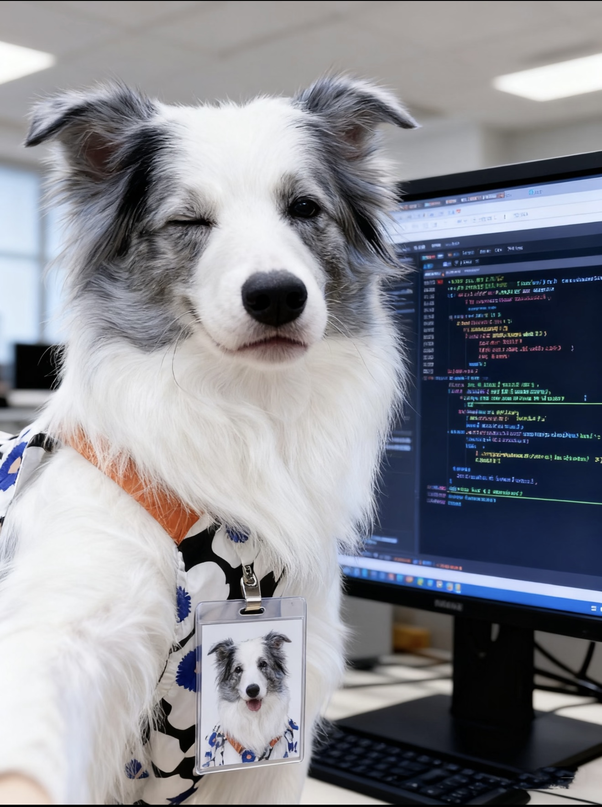

1) Responsive sizing
img { width: 25%; height: auto;
}

img { max-width: 100%; height: auto; }
Right container width: 360px
2) Display & baseline gap
This sentence sits on the baseline. Notice the thin strip
below the inline image when mode = inline.
/* Fixes */
img { display: block; } /* removes the baseline gap entirely */
/* or keep inline and align differently */
img.inline-fix { vertical-align: middle; /* or: bottom */ }3) Overlays on the container
Put gradients/filters on the container (or its
pseudo-element), not on the <img>. This preserves
the image and gives you flexible layering.
.profile-pic::after {
background-image: linear-gradient(135deg, rgba(141,221,221,.55), rgba(159,247,127,.55));
background-repeat: no-repeat;
background-position: center;
background-size: cover;
opacity: 0.45;
}Tip: Multiple backgrounds are comma-separated; the first is painted on top.
4) Text fill via background-clip: text
Beautiful Gradient Text
.clip-title {
background-image: linear-gradient(90deg, #7bd, #e59);
-webkit-background-clip: text;
background-clip: text;
-webkit-text-fill-color: transparent;
color: transparent; /* let the background show through */
display: inline-block;
}
5) object-fit: cover on <img>
img.hero-img {
width: 100%;
height: 220px;
object-fit: cover; /* fills and crops if needed */
}